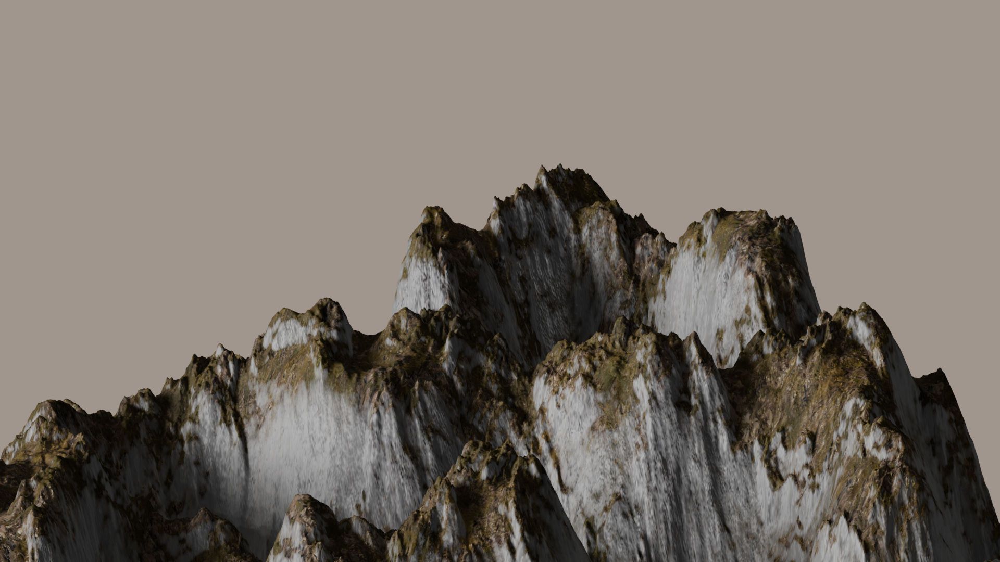

Illustrations
THE WITCH OF AIAIA
(Videogame Concept Art)

This is some concept art I created for my videogame proposal to the DADIU program. The artwork shows the prison island of the goddess Circe. Here, she explores and unravels its mysteries, crafts potions and casts enchantments to protect her nymphs. To unbound herself from her prison, she shall face 3 divine trials from Helios, Oceanos and Hecate which help her unlock the power of the island and her own. At the end, the player chooses how Circe gets her freedom: leave Aiaia for good, claim it as her own untouchable domain, or destroy it entirely along herself, defying the gods.
Character designs for a company
(Dental and Medical clinic in Spain)


These characters were all designed from scratch to match a consistent and playful visual style. I created them using Procreate for initial sketches and Adobe Illustrator for vector refinement and final touches. Some were made for seasonal campaigns, like Halloween and Murcia’s Spring Festival, while others support the clinic’s branding and social media presence. The Pérez Mouse, for example, (Spanish version of the tooth fairy) was designed to connect with children and families through merchandise and fun promotions.
Totebag design: Murcia's spring festival edition
This tote bag was designed as part of a promotional campaign for the clinic, using original characters inspired by Murcia’s Spring Festival. It’s an example of how illustration and merchandise can work together to strengthen local identity and make healthcare spaces more approachable and engaging. The illustrations were created in Procreate and later vectorized in Adobe Illustrator to ensure crisp, print-ready quality.
Computer Graphics
Generated trees by L-Systems

These trees were generated using L-systems, a grammar-based method for modeling recursive structures. I first explored the parameters in Python to produce natural-looking growth, then imported the structure into Blender, where I built the final scene using geometry nodes and shaders.
Mountainous terrain with Geometry Nodes (Blender)
This terrain was procedurally generated in Blender using Geometry Nodes. I experimented with multiple types of noise functions to sculpt the mountainous shapes, and applied a custom material setup to enhance the sense of elevation and texture. The result is a dynamic landscape created entirely through node-based workflows—no sculpting or manual modeling involved.
As part of my Computer Graphics course at DTU, I created this interactive scene using WebGL and JavaScript. The goal was to simulate a reflective surface and have a teapot dynamically animate in and out of it, with lighting and shadows computed in real-time using shaders. Feel free to experiment with the buttons!
This interactive sphere was also part of my Computer Graphics course at DTU. You can toggle its orbit and dynamically adjust the number of triangle faces that define its geometry. A texture resembling Earth was added to make the model more visually engaging.
Other programming projects
Multi-Agent Systems: Box-Pushing Agent Demo
This video showcases a solution developed for a course in AI and Multi-Agent Systems (still ongoing), where an autonomous agent moves boxes to their designated goals within a grid-based environment. The system was coded in Python, communicating with a simulation environment through a Java-based client-server architecture. The agent uses pathfinding and decision-making logic to navigate, plan, and complete its objectives efficiently.
Bonus project :)
I created this website from scratch using HTML, CSS, JS, and some WebGL and shader integration. It's not just my site, it's my own design and development showcase!
I must admit, this is the first actual website I code from scratch so there is still lots of room for improvement. Nevertheless, I am proud of my creation and what I was able to learn on my own in 4-5 days.